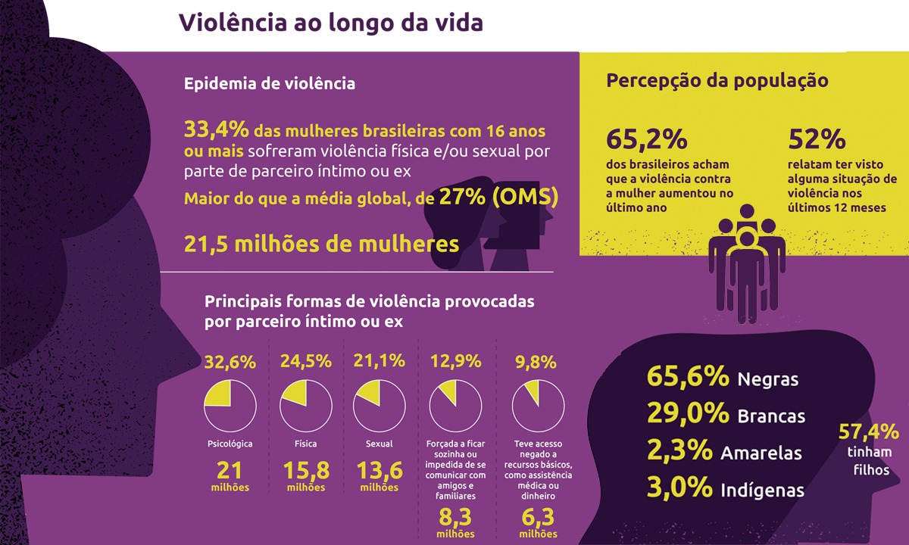

<!DOCTYPE html>
<html lang="pt-br">
  <head>
    <title></title>
    <meta charset="utf-8">
    <style>
    p {
      font-family: "Courier", serif;
    }
  </style>
</head>
<body>
    <div style="background-color: rgb(167, 106, 207);">
</body>
</html>
    </style>
        <link rel="stylesheet" href="eslito.css">
  </head>
  <body>
    <h1> <p style="text-align: center;"> </p></h1>
    <h1> <p style="text-align: ri;"> </p></h1>

    <div style="float: center;">
        
      </div>
    <p></p>
    <h1> <P>ESTATÍSTICAS</P></h1>
      <H3> <p> Mais um ano em que a violência contra as brasileiras têm sido crescente no país. É o que mostra a quarta edição da pesquisa Visível e Invisível: a Vitimização de Mulheres no Brasil. Realizado pelo Fórum Brasileiro de Segurança Pública, o levantamento permite estimar que cerca de 18,6 milhões de mulheres brasileiras foram vitimizadas em 2022, o equivale a um estádio de futebol com capacidade para 50 mil pessoas lotado todos os dias. Em média, as mulheres que foram vítimas de violência relataram ter sofrido quatro agressões ao longo do ano, mas entre as divorciadas a média foi de nove vezes.

        A pesquisa traz dados inéditos sobre diferentes formas de violência física, sexual e psicológica sofridas pelas brasileiras no ano passado. Em comparação com as edições anteriores, todas as formas de violência contra a mulher apresentaram crescimento acentuado no ano passado. Segundo o levantamento, 28,9% das brasileiras sofreram algum tipo de violência de gênero em 2022, a maior prevalência já verificada na série histórica, 4,5 pontos percentuais acima do resultado da pesquisa anterior.</p>
         
      
        <br>
        <p><a href="index.html">Sobre a dupla</a> </p>
    <p><a href="sobreadupla.html">Como surgiu?</a></p>
    <P><a href="referencias.html">Referencias</a></P>
  </body>
</html>